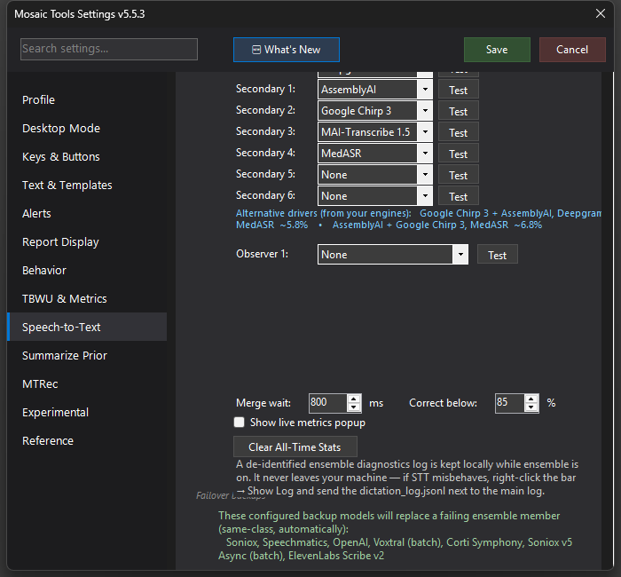

Live Ensemble Metrics
A draggable always-on-top overlay showing what the ensemble is doing in real time — confidence, per-engine corrections and confirmations, and the measured accuracy impact.

What it does
The metrics popup is a window into the ensemble's decision-making. While you dictate it shows the driver's live confidence bar, word counts, and how many low-confidence words were corrected; below that, a section per secondary engine shows its finals, how many driver words it fixed, and how many it confirmed. At the bottom: consensus stats, the last correction it made (so you can see exactly what changed and why), and an accuracy impact section — corrections are verified against your final signed reports, so the popup can show real precision figures for the session and all-time, not just activity counts.
How to turn it on / set it up
Settings → Speech-to-Text → Ensemble Mode → Show live metrics popup. Drag it anywhere; it stays on top and remembers its position. A Clear All-Time Stats button in the same settings area resets the cumulative counters.
Using it
Most people run without it day to day and turn it on when tuning an ensemble or evaluating a new engine: a secondary that never fixes or confirms anything isn't earning its slot; one with high fix counts and high precision is. Clicking through from the popup opens the full transcript comparison view for a line-by-line look at what each engine heard.
Tips & gotchas
- Section headers collapse, so you can shrink it to just the confidence bar during normal reading.
- All-time stats only accumulate when a report is signed — abandoned dictations don't pollute the precision numbers.
- The labels follow your actual configured engines, whatever you've chosen as driver and secondaries.